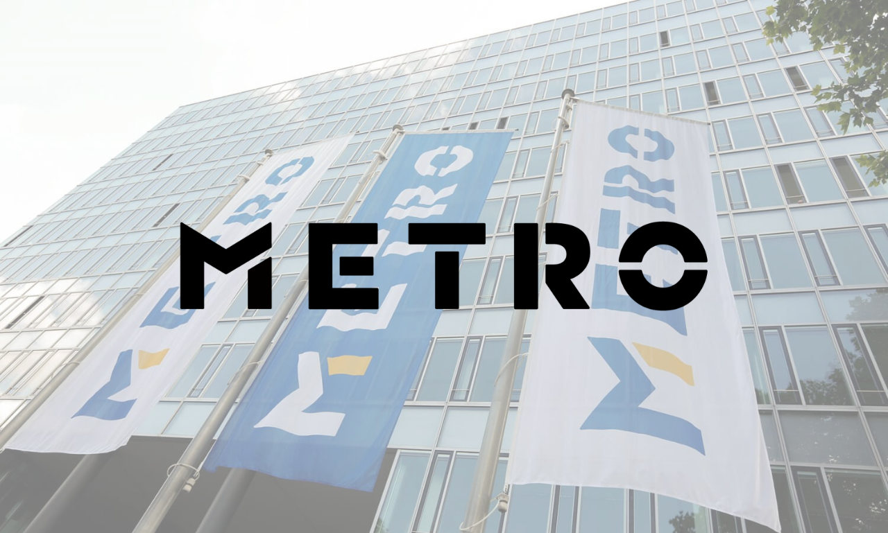
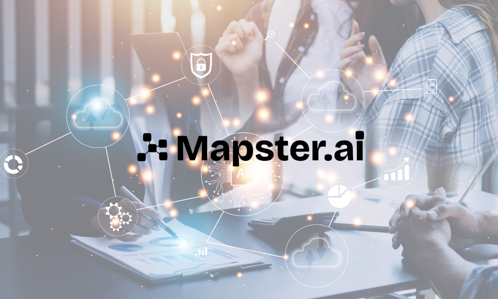
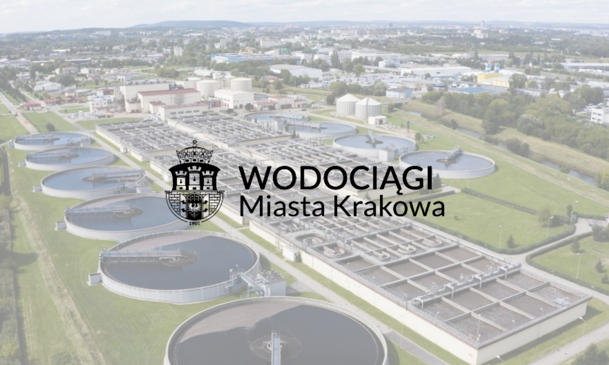
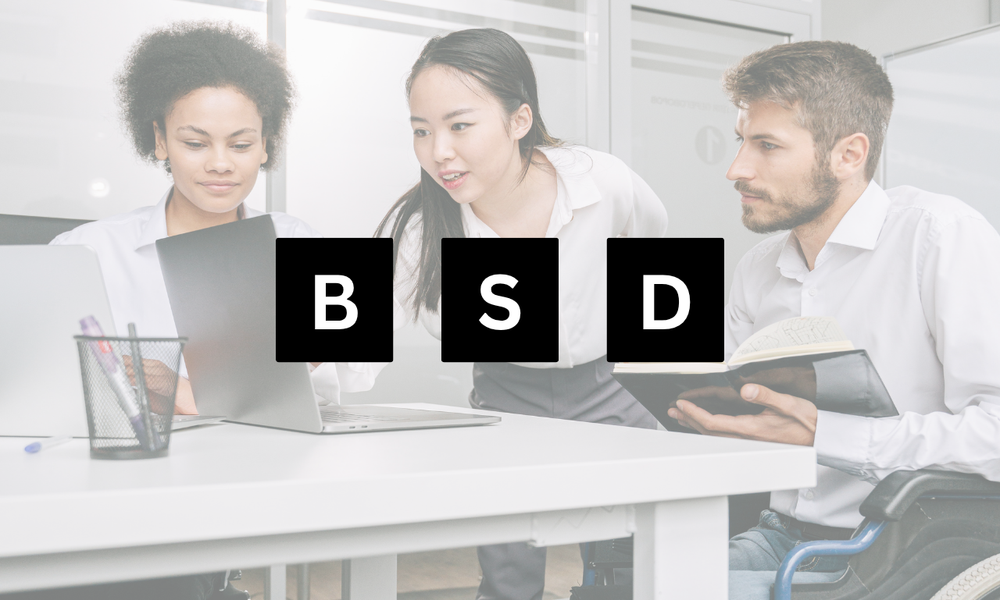
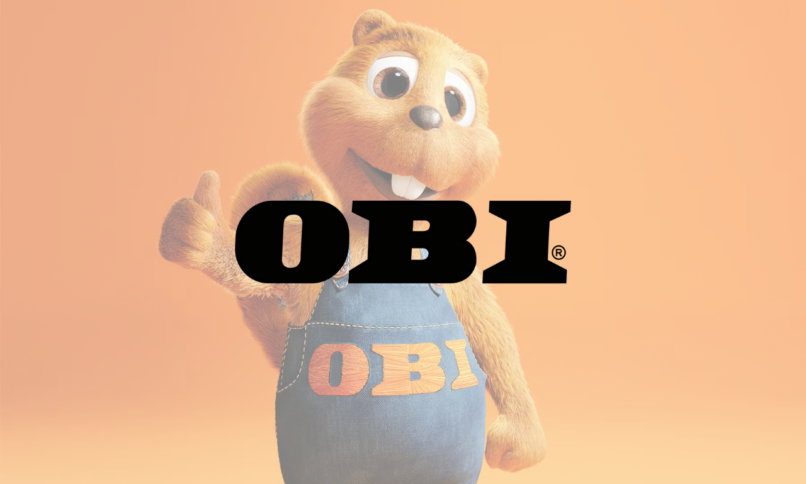
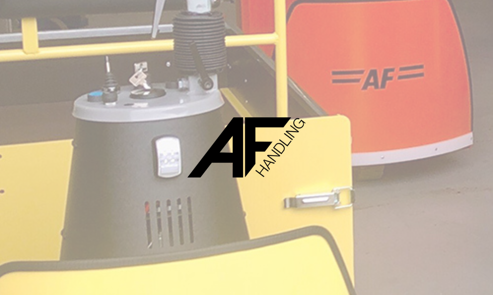

Strategie & Struktur
Komplexes schnell erfassen und sauber umsetzen
- Analytisches und strategisches Denken
- Strukturierte Priorisierung und eigenverantwortliche Umsetzung
- Markt-, Wettbewerbs- und Themenanalysen
Marketing · Strategy · Digital
Ich verbinde strategisches Denken mit digitaler Umsetzungsstärke und arbeite dort am besten, wo beides zählt.
Sprachen
Werte
Ich bin Xhemile, Marketeer mit Schwerpunkt auf digitalen Strategien und internationalen Märkten. Drei Hochschulabschlüsse, ein Auslandsaufenthalt in Paris und Berufsstationen bei Aircall, Douglas und Optimerch haben meinen Blickwinkel geprägt. Seit 2025 gebe ich mein Wissen als Dozentin an der CBS weiter.
Mich interessiert der Punkt, an dem Analyse und Umsetzung zusammenkommen: Entscheidungen auf Datenbasis treffen und Inhalte gestalten, die tatsächlich wirken.
Albanisch und Deutsch als Muttersprachen sowie meine Zeit in Frankreich haben mir ein feines Gespür für kulturelle Unterschiede mitgegeben, das ich in internationalen Teams konkret einsetze.
„Xhemile demonstrated exceptional dedication, enthusiasm, and a strong willingness to learn. She is very organized, self-motivated and autonomous."
Klick auf einen Abschluss für Details zu Kursen, Schwerpunkten und Abschlussarbeiten.
Thema: „Redefining Authority in Digital Marketing: The Role of Influencers Versus AI-Driven Recommendations"
WS 2025/26: Digital Marketing (Master) · 15 Studierende
SS 2026: Digital Marketing (Master) · 42 Studierende + Digital Marketing Basics (Bachelor Exchange) · 10 Studierende
Betreuung von Gruppenpräsentationen, Term Papers und Abschlussprüfungen.
Der Double Degree an der ESSEC hat mein internationales Denken, meine Selbstorganisation und meine Sicherheit im Umgang mit neuen Kontexten spürbar gestärkt.
Thema: Drawing up reliable profiles of the business cultures of selected small European nations
Konzeption und Durchführung von Digital-Marketing-Kursen im Bachelor- und Masterprogramm. WS 2025/26: Masterkurs Digital Marketing (15 Studierende). SS 2026: Masterkurs Digital Marketing (42 Studierende) sowie Bachelorkurs für internationale Exchange-Studierende (10 Studierende). Betreuung von Gruppenpräsentationen, Term Papers und Abschlussprüfungen.
Verantwortlich für Content-Management, Onsite-Kampagnenentwicklung und Stakeholder-Alignment im DACH-Markt. Eigenständige Entwicklung eines Backup-Systems und Prozessimplementierung für Startseiten-Planung. Koordination saisonaler Themenwelten und Onboarding einer neuen Werkstudentin.
Aufbau und Leitung des Employee-Advocacy-Programms für DACH mit 35.000+ organische Impressions, anschließend auf UKI ausgeweitet. Steuerung von Social-Media-Content, Newslettern und Kampagnen-Assets. Optimierung von Landing Pages in Zusammenarbeit mit dem Demand-Gen-Team.
Amazon Marketplace Optimierung, umfassende Keyword-Strategien und Entwicklung von A+ Content, Markenstories & Amazon Stores für verschiedene Kunden. Eigenständige Erstellung und Pflege von Amazon PPC-Kampagnen.

METRO AG
Employer Branding Strategy
Praxisprojekt zur Konzeption einer Recruiting-Strategie für junge Talente, basierend auf Datenanalysen, Personas und kanalübergreifenden Touchpoints.

Mapster.AI
Product Innovation Framework
Praxisprojekt zur Analyse von Marktpotenzial und Nutzerbedürfnissen für die Weiterentwicklung von Mapster.ai als AI-gestützte Plattform für kollaborative Entscheidungsfindung.

Wodociągi Miasta Krakowa
Sustainable Water Strategy
Projektarbeit zur Entwicklung einer nachhaltigen Wasserstrategie mit Fokus auf Rainwater- und Greywater-Systeme zur Stärkung von Resilienz und Ressourcenmanagement.

BSD — Schwerbehindertenvertretungen
Social Media Strategy
Praxisprojekt für eine inklusive Social-Media-Strategie zur Steigerung von Sichtbarkeit, Reichweite und Community-Engagement.

OBI
Digital Communication Platform
Praxisprojekt zur Entwicklung eines digitalen Plattformkonzepts für interne Kommunikation, Effizienz und Zusammenarbeit über Standorte und Kulturen hinweg.

A. Flensborg A/S
Market Entry Strategy
Praxisprojekt für eine marktorientierte Entry-Strategie mit Fokus auf digitale Sichtbarkeit, Kundenbedürfnisse und Wettbewerbsvorteile im Ruhrgebiet.
Ich erfasse komplexe Situationen schnell, priorisiere datenbasiert und übersetze Ideen in klare, umsetzbare Maßnahmen, auch wenn die Ausgangslage unstrukturiert ist.
Drei Sprachen, mehrere Studiengänge, Paris-Erfahrung: Ich denke und arbeite grenzüberschreitend, mit Gespür für kulturelle Nuancen und Marktunterschiede.
Ich spreche die Sprache der KPIs und Dashboards und denke gleichzeitig in Geschichten und Botschaften. Diese Kombination macht meine Kampagnen messbar und merkbar.
Meine Führungskräfte betonen durchgängig: präzise Arbeit, zuverlässige Abgaben, hohe Eigenverantwortung. Auch unter Zeitdruck bleibt meine Qualität konstant.
Neue Themen, Tools und Branchen: Ich steige schnell ein, verbinde Bekanntes mit Neuem und liefere bereits in der Einarbeitungsphase echten Mehrwert.
Ob Pitch, Briefing oder Lehrveranstaltung: Ich erkläre klar, überzeuge mit Substanz und passe meine Kommunikation sicher an verschiedene Zielgruppen an.
Xhemile quickly proved herself to be an exemplary Marketing Specialist, displaying a strong aptitude for learning new responsibilities and skills. Due to her commitment we now have a library of up-to-date online content, thus greatly increasing our online reach in the market.
Hazel Marcks
Senior Marketing Manager DACH, Aircall
Ms. Rexhepi distinguished herself with an extremely high willingness to learn. She always carried out all tasks completely independently, with great care and planning. Ms. Rexhepi always worked extremely reliably and very precisely.
Carolin Mädel
Senior HR Specialist, Douglas
Xhemile zeigte außergewöhnliches Engagement, hohe Belastbarkeit und eine bemerkenswerte Lösungskompetenz. Für alle auftretenden Probleme fand sie ausnahmslos ausgezeichnete Lösungen.
Daniel Bruckhaus
Geschäftsführer, Optimerch
Xhemile demonstrated exceptional dedication, enthusiasm, and a strong willingness to learn. She is very organized, self-motivated and autonomous. Her marketing and communication skills along with her international background make her a perfect fit for future opportunities in Marketing.
Sarra Ouaili
Senior Manager Marketing EMEA, Aircall
Ich stelle die richtigen Fragen, bevor ich anfange. Das spart im Nachhinein Zeit und liefert präzisere Ergebnisse.
Klare Prozesse, saubere Dokumentation, transparente Kommunikation. Das gibt dem Team Sicherheit und mir den Fokus für inhaltliche Arbeit.
Entscheidungen auf Datenbasis — aber mit Blick auf das große Bild. Zahlen sind ein Werkzeug, kein Selbstzweck.
Ich liefere vollständig, termingerecht und ohne Nachfragen. Was einmal aufgebaut ist, soll auch ohne mich funktionieren.
Offen für Vollzeitstellen, Freelance-Projekte und strategische Kooperationen im DACH-Raum und international.
CV herunterladen ↓